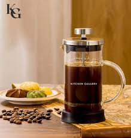

French Press
A full-immersion brewing method that results in rich, robust flavors by steeping coffee grounds in hot water and pressing the filter down.

Espresso Machine
An espresso machine forces a small amount of hot water through finely-ground coffee beans, creating a concentrated and strong brew.

Pour Over
A method where hot water is slowly poured over coffee grounds in a filter, allowing for precise control over extraction time and flavor.

Aeropress
The Aeropress uses air pressure to force water through coffee grounds, resulting in a quick, clean cup with less bitterness.